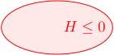
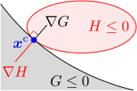
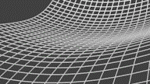
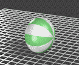
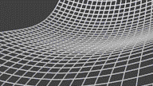
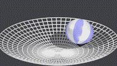
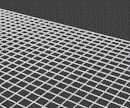

運動方程式()の拘束力 と拘束トルク を求めたい
床の上に置かれた剛体の運動を計算したい。剛体にかかる拘束条件は、「滑り拘束（＝摩擦なく滑る）」あるいは「転がり拘束（＝全く滑らずに転がる）」であるとする。
運動方程式を求めるための戦略としては、2種類が考えられる。1つ目は、前章のように自由な速度を求め、それに対する運動方程式を立てる方法。2つ目は、拘束の無い剛体の運動方程式（第11章の11.1節）に、拘束力の総和
と拘束トルク
を加えたもの：（添え字
は重心を基準にしていることを表す）
を用いる方法である。
を求めれば、運動方程式が確定することになる。
今考えている状況では、拘束を受ける点（＝床と接触している点）が時々刻々変わるので、1つ目の方法は難しそうである。よって、式()を用いる2つ目の方法を採用しよう。
を求めればよいわけだが、そのためには第8章と同様に、拘束条件を定式化してやれば、ダランベールの原理から拘束力が決まる。
この章では、まず、剛体に拘束を追加した時の運動方程式を一般的に求める。その後、床と剛体が接しているための条件を導出し、滑り拘束および転がり拘束の条件式を具体的に書下す。これらを、以下のように4つの節に分けて議論する。
拘束が追加された剛体の運動方程式剛体と床が接している条件滑り拘束転がり拘束
13.1拘束条件が追加された剛体の運動方程式
計算を見やすくするため、運動方程式()を以下のようにまとめておく：
ただし、各々の記号は以下のように定義している：
運動方程式を決めるためには、
（これも拘束力と呼ぶことにする）を求めればよい。（重心を基準にしているので
などは
のように書いたほうがよいが、見づらいので省略している。）
この節では、剛体に拘束条件を課した時の拘束力
を一般的に求め、運動方程式()を導く。そうすれば後の節で、滑り・転がりの場合の拘束条件を求めれば、それらの運動方程式が確定することになる。
ダランベールの原理()により、運動方程式は式()
剛体の自由な速度
に対して、以下のような拘束条件がかかっているとする：（
は行列）
これはちょうど、座標に対する拘束条件
の両辺を
で微分して、速度
に対する拘束条件にしたもの
と同じ形である。
拘束力
を導くにはダランベールの原理（第8章の8.2節）を考えればよい。ダランベールの原理によると、仮想変位によって拘束力が引き起こす「剛体の運動エネルギー
の変化」はゼロである。よって、剛体の運動エネルギー
の微分：（以下の【13.1-注1】の式()）
において、拘束力
を含む項がゼロ、即ち、
である。ただし、仮想変位を考えているので、
は、拘束条件()において
としたもの：
を満たす（式()で
の時間依存性を無視したものに対応する）。以上をまとめると、
に対する条件：
が得られる。
この式()を満たす
は、未定乗数
を用いて
と書ける。よって後は、
を求めれば、拘束力
が確定する。その方法は、第8章の場合と同様に、運動方程式と拘束条件を連立するだけである。実際に計算すると、求める運動方程式は、以下の【13.1-注2】となる。
【13.1-注1】剛体の運動エネルギー
剛体の運動エネルギー
は、以下のようになる：
最後の式では、第1項が重心運動のエネルギー、第2項が回転運動のエネルギーという形にうまく分離している。
また、
の微分は、運動方程式が式()であるとき、以下で与えられる：
導出
剛体を構成する質点要素の速度
と
の関係式は以下である：（第11章の11.1節）
これを使って、運動エネルギー
の中の
を
で表せばよい：
最後の式の
の部分は、11.1節で述べた
の定義そのものである。
についても、式()を辺々微分して
【13.1-注2】拘束された剛体の運動方程式：式()
剛体に、自由な速度
に対する拘束条件
が課せられているとする。この時、運動方程式は以下のようになる：
は以下のように書ける：（第11章の【11.1-注3】）
これを計算するには、初期値が式()を満たしている必要がある。しかし、式()が可積分の場合には、積分したものも満たさなければならない（以下の【13.1-注3】参照）。積分定数
の分だけ不定性があるが、
の値は問題設定の中で与えられるはずである。
導出
式()を運動方程式()に代入すれば、式()の形になる。後は、未定乗数
が式()になることを示せばよい。そのためには、運動方程式()の左辺の時間微分を実行したもの：
を、拘束条件()の時間微分：
に代入して加速度項
を消去すればよい。その式を
の形に変形すれば、式()に一致する。
初期値に対する拘束条件
運動方程式()が得られたので、初期値を与えれば運動を計算することができる。初期値は、拘束条件を満たすように取っておく必要があるが、これがなかなかに厄介である。（初期値を正しくとっておけば、運動方程式()の解は、自動的に拘束条件を満たし続ける。）
まず、
における初期速度
は、もちろん拘束条件()を満たさなければならない。しかし、これだけではない。一般に、拘束条件は
だけでなく、剛体の位置
と向き
に対しても課せられている（例えば床に接しているという条件）。
における
はこれを満たす必要があるが、その拘束条件はどのように与えられるのだろうか。
もし、拘束条件が、位置
と向き
の速度を含まない関係式
の形に書けたならば、初期値が満たすべき拘束条件は、第8章のように、
である。その場合、拘束条件()は
に対応している。問題は、対応する
が常に存在するとは限らないということである。
が存在する場合、拘束条件は可積分であるといい、存在しない場合、非可積分であるという（以下の【13.1-注3】）。
非可積分な拘束条件の場合、速度
を含んだ形でしか書けず、
に対する条件は出ない（式()のみとなる）。従って、式()の形で拘束条件が与えられている場合、正しい初期値を与えるためには、その式が可積分かどうかを判定し、可積分であれば、対応する
という拘束条件を初期条件に追加する必要がある。（拘束条件の一部が非可積分という場合もある。13.4節で述べるが、転がり拘束の場合がそうであり、床に接するという条件は可積分だが、転がるという条件は非可積分になる。）
【13.1-注3】非可積分な拘束条件
一般に、拘束条件
が、何らかの拘束条件
の時間微分
と等しい時、式()は可積分（あるいはホロノミック）であると言う[1][2]。逆に、
が存在しない場合、非可積分（あるいは非ホロノミック）であるという[3]。
補足
[1] 例えば、
という拘束条件は、
と書けるので、可積分である。（これは、原点からの距離
が一定という拘束条件である。運動を計算する際には、
は問題設定の中で与えられているだろう。）
[2] 可積分の場合であっても、式()の左辺と式()の左辺が一致するとは限らない。ただし、その場合であっても、積分因子と呼ばれる何らかの関数
を用いて
式の左辺
が成立する。
が出てくるのは、式()の拘束条件には、ゼロにならない任意の関数を両辺に掛ける自由度があることに由来する。
を特定するには、この積分因子を見つけなければならない。（第10章の【10.3-注1】で、角速度
に対し、
となるような回転の自由な座標
が存在しないことを示した。その時は偏微分の可換性を使うだけでよかった。今の場合も似た状況ではあるが、式()には未知関数である積分因子が含まれるため、可積分性の判定はより複雑である。）
[3] この章で扱う転がり拘束は、これまでの章で出てきた拘束条件と異なり、非可積分である。まず、床との接触点
を固定したままボールの向きを変えることを考えると、「滑らない」という拘束条件のためにその操作は自由にはできず、鉛直方向を軸とした回転のみが可能である。しかし、「ボールを転がして移動させてから元の位置
に戻す」という操作と合わせると、実は、ボールの向きを任意に調節することができる（実際にボールを床の上で転がしてみれば分かる）。
を決めても向きが限定されないので、ボールの向きに対する拘束条件は課されていない。結局、「滑らない」という追加の拘束条件は、ボールの位置・向きは拘束せず、速度・角速度のみを拘束する、即ち、非可積分である。（もし可積分であれば、位置を決めた時に
を満たす向きしか取れなくなる。）
13.2剛体と床が接しているための条件
この節では、剛体と床が接触し続けるために成り立つべき、剛体の速度
に対する拘束条件()を導く。滑り拘束と転がり拘束は両方とも、この条件を満たさなければならない。簡単のため、床と剛体は1点でのみ接しているとする。
モデリング：時刻 での剛体の形状は式()
床の形状を
で表すことにする（右図）。即ち、これを満たす
の集合が床を構成する。
に依存しているように書いているのは、時間とともに床が変形してもよいことを表している。

また、モデル位置における剛体の形状を
で表すことにする。モデル位置は任意であり、床と接触するようにとる必要はない。時刻
において、剛体の位置および向きが
であるとする（
は重心位置、
は回転行列）。この時の剛体の形状
（右図）は、モデル位置での形状
を用いて、以下のように書ける：（
はモデル位置での剛体の重心）
これを示すには、モデル位置での質点要素
が満たす式
に、時刻
での質点要素の位置
を代入して、
を消去すればよい（回転行列の性質
を使う）。
が時間に依存しているように書かれているのは、剛体の運動によって、位置・向きが変わることによるものであり、剛体自体が変形するわけではない。
剛体の位置・向き に対する拘束条件は式()、速度・角速度 に対する拘束条件は式()

剛体と床が接触しているための条件を考える。剛体と床の接触点を
とおく（右図）。接触は1点のみと仮定する。
が満たす条件は、「
が剛体と床の両方の表面にあり、かつその点での接平面が一致する」ことなので、以下のように書ける：
は、ともに
での値である。（
は
の大きさを正規化したものである。
はそれぞれ
が大きくなる方向を向くので、右図のように互いに逆を向くことに注意。）
式()を満たす
が存在するように
（＝剛体の位置・向き）が選ばれている必要があるので、この式は、式()を通して剛体の位置・向き
に対する拘束条件になっている。第3式は、3成分であるが、
の一方が与えられた時に、他方の向きしか決められないので、実際には2つの条件しか与えない。よって、式()は全体として4つの条件を与える。
を決定するには3つの条件が必要なので、拘束条件の数は残りの
となる。
式()は、「接触点
の定義」と「剛体の位置・向き
に対する拘束条件」が混じった形となっており、このままだと扱いづらい。そこで、式()を時間微分して、速度に対する拘束条件にする。剛体と床は接触し続けるのだから、式()は任意の時刻の接触点
に対して成立する。よって、同式を時間で全微分したもの成立しなければならない：
の時間微分には
が含まれているので、この式は、
に対する条件であると同時に、
に対する拘束条件にもなっている。（上述のように、
の時間依存性は、剛体の位置・向きの変化、即ち、
の時間依存性によるものである）
式()の分離→ の拘束条件()、接触点 の速度()
式()を、「接触点の速度
の定義式」と「剛体の速度
に対する拘束条件」に分離したい。まず、
を消すには
式の第式同第式
に、式()の第3式を代入すればよい：
がなくなったので、これが
に対する拘束条件になっている。運動方程式を得るには、これを、式()（
）の形に変形する必要がある。実際に計算すると、以下の【13.2-注1】の式()のようになる。
次に、接触点の速度
についてである。拘束条件()の第3式は3成分の式ではあるが、
の形に変形することはできない。実際、同式の全ての項に単位ベクトルの微分が現れているが、これらには「その単位ベクトルと直交する面」への射影行列が含まれる（第8章の【8.3-注1】）。そのため、同式に
（またはそれに平行な
）を左乗したものは
の値にかかわらず常に成立する。よって、3成分全てが独立というわけではなく、
の「
方向成分」については条件を与えない。
よって、
を求めるには、拘束条件()の第3式と、式()の別の1つの式を連立する必要がある。例えば、第1式に
をかけた
を同第3式に辺々加えると
となる。
にかかる行列は、
を左乗してもゼロにならなくなるので、可逆になり、
について解ける：
以上により、式()の独立な4成分の条件は、「1つの拘束条件()」と「
を与える3成分の式()」に過不足なく分離することができた。
【13.2-注1】床との接触条件
床と剛体が接触し続けている時の、剛体の速度
に対する拘束条件は、以下のようになる：
床の形状は
で与えられ、
は剛体と床の接触点である。
特に、床が静止している場合（
）、この式は、接触点における「剛体の質点要素の速度」が、
と垂直、即ち、拘束面と平行になっていることを意味しており、直感的にも自然である（そうでなかったら、めり込んだり離れたりしてしまう）。
導出
式()：（再掲）
で与えられている拘束条件を変形するだけである。この式の
の中に含まれている
を表に出す必要がある。そのためには、
と
の関係式()：（再掲）
を使えばよい。この式の両辺の
微分および
微分を取ると、それぞれ以下のようになる：（
が
だけに作用することに注意）
後は、第1式に、第2式を代入して
部分字を消去すると
となる。拘束条件()は
の時に成立する式なので、式()において
としたものを式()を代入すれば、与式を得る。（式()の第3式
を使って
を
で置き換える。）
13.3滑り拘束
この節では、滑り拘束に対する運動方程式の時方をまとめる。それを用いて、具体的な数値計算を行う。
計算方法
剛体が床の上を滑るという拘束条件は、剛体と床が接触しているという前節の条件()そのものである。よって、運動方程式はすでに確定している。具体的な計算方法をまとめると、滑り拘束の場合には以下のように計算すればよい：
- まず、床の形状
と、モデル位置での剛体の形状
を定義する。
- 次に、拘束条件()を満たす接触点
が存在するように、
での初期位置
をとる。初期速度
については、拘束条件()を満たすようにをとる。
- その後の運動は、運動方程式()から計算できる。ただし、
およびその時間微分は拘束条件()で与えられる（
における値である）。時間微分すると
が出てくるが、式()から求められる。
なお、接触点
は、
から直接計算することも原理的には可能であるが、ステップ毎に直接計算するのは、一般に困難である。その場合、式()の
を用いて
の時間変化を同時に計算していくこともできる：
。
前述のように、今考えているのは、常に1点で接触している状況である。接触点が複数ある場合、あるいは運動の途中で増える場合（衝突運動になることが多いだろう）は考慮していない。逆に、接触点が減る場合も扱えない。例えば、本来であれば空中に飛び上がってしまうような場合でも、床から離れないようにする拘束力が働いて、床にくっついたままになる（これを改善するには、拘束力の総和
を計算しておいて、
の向きが床にひきつける方向になった瞬間に、
を
にして自由な運動に切り替えればよい）。
計算例
例として、球を
方向につぶした（あるいは伸ばした）楕円体の剛体
を取りあげる（
は定数）。密度は一様とする。モデル位置での慣性モーメント
は、剛体を質点要素に分解して数値的に近似計算してもよいが、今の場合には解析的に計算することができ、以下のようになる：
は剛体の質量である。（導出は第14章で行う。）
数値計算を行うと下図のようになる。最も長い軸の半径が
となるようにしている。


13.4転がり拘束
この節では、転がり拘束での拘束条件が、式()となることを見る。前章の滑り拘束に、滑らないという拘束条件を加えればよい。具体的な数値計算も行う。
拘束条件は式()
滑らないということは、接触点
において剛体と床が相対速度を持っていないということである。即ち、「
に位置している剛体上の質点要素
」の速度
と、「
に位置している拘束面上の点
」の速度
が等しいということである：
よって、式()の形に変形すると、以下のようになる：
床が静止している場合には、
である。そうでない場合、
を求めるためには、床の上の各点の速度を与える必要がある。しかし、動く壁との衝突（4.2節）の時にも述べたが、床を定義する
という式の中に、床の水平方向の速度の情報を含めることはできない。そのため、床が動いている場合には、追加でその情報を与えてやる必要がある。
式()は、滑り拘束の条件()を含んでいる。実際、式()の両辺に
を左乗すると、式()に一致する。よって、転がり拘束の場合の計算方法は、滑り拘束の場合の拘束条件()を、上式()で置き換えるだけである。
剛体の初期位置・向きに対する拘束条件は、床と剛体が接していることのみなので、滑り拘束の場合と同じで1つだけである。一方、初期速度・角速度に対する拘束条件は式()の3つであり、滑り拘束の場合よりも数が多い。即ち、転がり拘束は非可積分（【13.1-注3】）である。
計算例
床が静止している場合、数値計算を行うと下図のようになる。剛体の設定は、滑り拘束の場合と同じである。


